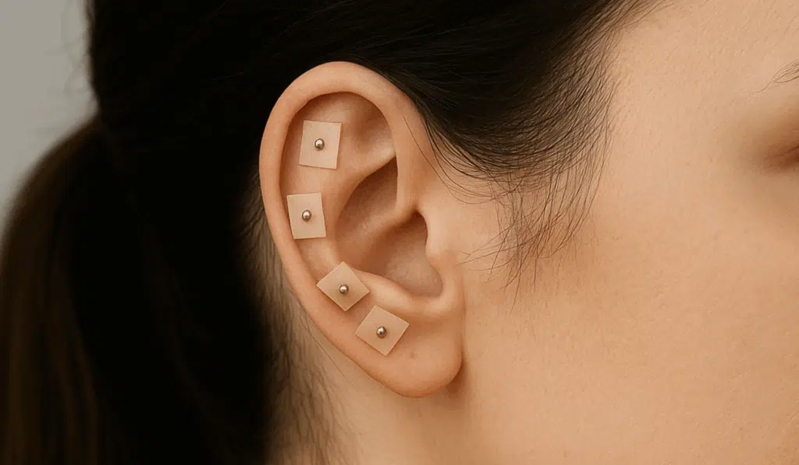
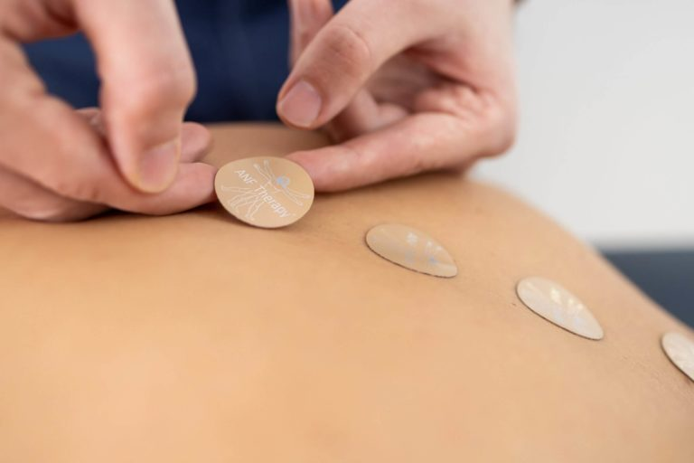

“
From the moment I walked in, I felt completely at ease. Dr. Semaan took the time to really listen and tailor my treatment to exactly what I needed.
Gentle acupuncture care designed to restore balance and relieve pain.
Book Your AppointmentDiscover services designed to nurture mind and body, from pain relief to deep nervous-system restoration.




MEET YOUR PRACTITIONER
Dr. Serena Semaan is a licensed acupuncturist with over 10 years of experience in holistic and integrative wellness. She specializes in personalized acupuncture treatments designed to relieve pain, calm the nervous system, and restore whole-body balance. Known for her gentle approach and calming presence, Dr. Semaan is devoted to helping patients feel supported, restored, and truly at ease throughout their healing journey.
Each session is thoughtfully customized to your unique body, lifestyle, and wellness goals. We take time to understand you fully, creating treatments that address both symptoms and root causes for deeper, longer-lasting results.
With more than ten years of hands-on practice in integrative medicine, our care blends traditional acupuncture techniques with modern, evidence-informed approaches to ensure safe, effective, and intentional healing.
Our studio is designed as a sanctuary for healing from soft lighting and natural textures to quiet, intentional details that help your nervous system relax the moment you arrive.
We treat the whole person physical, emotional, and energetic supporting relief from pain, stress, fatigue, and hormonal imbalances while promoting long-term balance and resilience.
Most patients feel minimal discomfort. Treatments are often deeply relaxing and calming.
It depends on your condition, but many patients notice improvement within a few sessions.
Acupuncture can help with pain, stress, digestion, hormonal balance, and more.
Yes, when performed by a licensed practitioner, acupuncture is safe during pregnancy.
Some plans are accepted. Contact us for details about your provider.
Your first session includes a consultation and a personalized treatment plan.
Wear comfortable clothing that allows easy access to arms and legs.